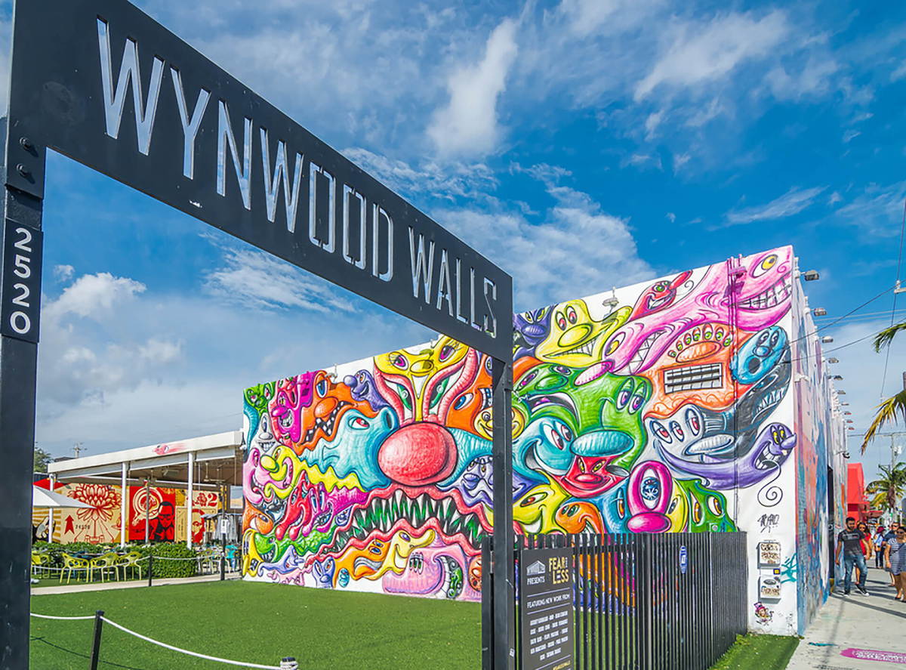

Atrakcije Miamija
Miami je poznat po svojim prelijepim plažama, bogatoj kulturi i nevjerojatnim umjetničkim djelima. Ovdje su neke od najpopularnijih atrakcija koje morate posjetiti:
South Beach
South Beach je poznata po svojim prelijepim plažama, kristalno čistom moru i živahnom noćnom životu. Savršena destinacija za opuštanje i zabavu.
Little Havana
Little Havana je kulturno srce kubanske zajednice u Miamiju. Posjetite ovu živahnu četvrt, uživajte u kubanskoj hrani, glazbi i festivalima.
Wynwood Walls
Wynwood Walls je nevjerojatna umjetnička četvrt u kojoj možete vidjeti velike muralne slike i grafite. Idealno mjesto za ljubitelje ulične umjetnosti.
Vizcaya Museum
Vizcaya Museum je povijesna vila s prekrasnim vrtovima koja nudi uvid u životna vremena iz prošlih stoljeća. Savršen spoj kulture i prirode.
Bayside Marketplace
Bayside Marketplace je shopping centar uz obalu gdje možete kupiti suvenire, uživati u restoranima i uživati u ambijentu uz more.